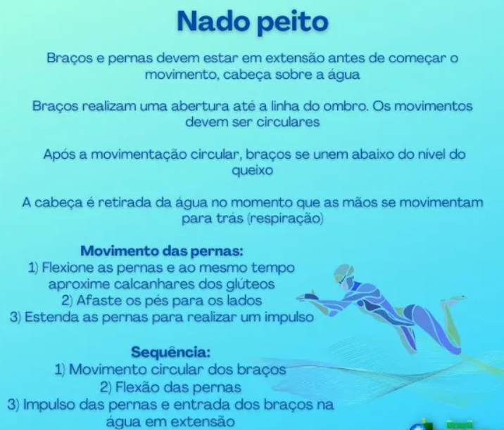
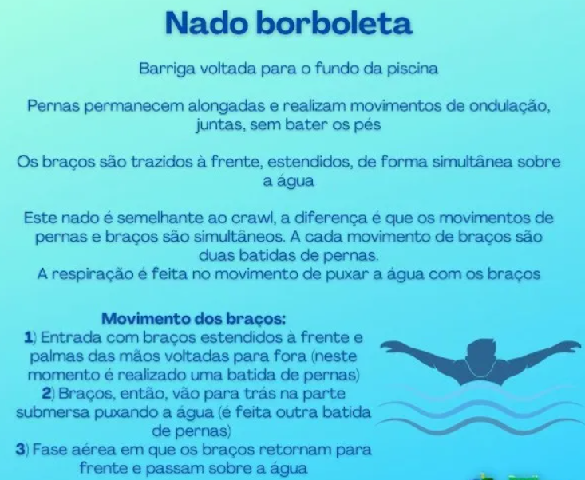
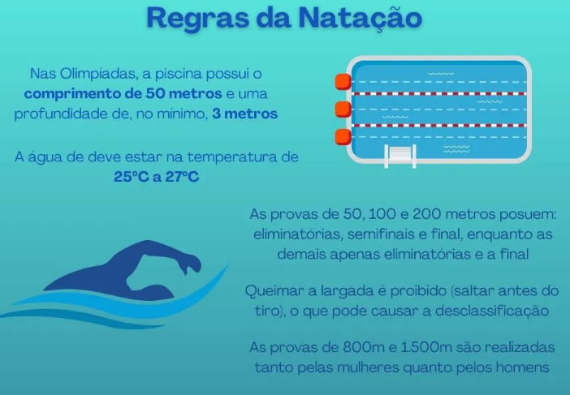

Natação
Por movimentar praticamente todos os músculos e articulações do corpo, a prática da natação é considerada um dos melhores exercícios físicos existentes trazendo ótimos benefícios para o organismo e benefícios a saúde, ajudando a melhorar a coordenação motora, além de ser recomendada para pessoas com problemas respiratórios, como por exemplo a asma, também é a única atividade física indicada para menores de 3 anos.
Click aqui para voltar ao menu.
Tipos de Nados
Os tipos de nados são divididos de acordo com o posicionamento do tronco do corpo e o movimento de pernas e braços. São quatro estilos de nados: crawl, peito, costas e borboleta.
O nado peito é praticado desde a Idade Média, período que já contava com competições de natação com o uso dessa modalidade de nado. Um dos primeiros registros foi feito pelo francês M. Thevenal, em 1696, que descreveu uma forma de nadar semelhante ao estilo praticado atualmente e com a movimentação parecida com a de uma rã. A estreia do estilo nos Jogos Olímpicos aconteceu na edição de 1904, na cidade estadunidense de Saint Louis.
O nado costas foi criado pelo italiano Bernardi em 1794. Inicialmente, a movimentação dos braços era feita de forma simultânea, mas com o passar do tempo, os nadadores perceberam que a forma alternada dos membros superiores proporciona melhor rendimento. A única diferença desse nado com o crawl é que ele é realizado de costas. A movimentação alternada dos braços e as batidas da pernas ocorrem da mesma forma em ambos os estilos.

O nado borboleta foi criado a partir do nado peito em meados da década de 1930. A criação se deu com a observação de que quando a recuperação ocorria mais próxima do nível da água, o rendimento do nado era melhor. Por algum tempo foi adotado o estilo peito-borboleta, no qual era realizada a pernada do nado peito com a movimentação aérea dos braços do estilo borboleta. A partir de 1950, foi inserida a movimentação ondulada das pernas, conhecida como golfinho, e assim o nado borboleta foi consolidado tal como é conhecido atualmente.
Click aqui para voltar ao menu.
Regras da Natação
"A prova da modalidade medley reúne os quatro estilos de nados da natação. Ela pode ser realizada das seguintes formas:

Click aqui para voltar ao menu.
Beneficios da Natação
Click aqui para voltar ao menu.
História da natação
A superfície do planeta é coberta por água em mais de 70% de sua área. A disponibilidade desse recurso proporcionou, ao longo do tempo, a prática de atividades aquáticas com diferentes objetivos."Essenciais para a sobrevivência, os recursos hídricos sempre foram atrativos para os humanos, devido a atividades como o consumo da água, a pesca, o banho enquanto lazer e a higiene corporal. A origem da natação está associada à teoria de que a observação dos animais aquáticos por grupos antigos de humanos permitiu verificar como se dava o deslocamento do corpo na água. Dessa forma, a natação começou a ser consolidada enquanto uma prática que permite a movimentação corporal de maneira fluida no ambiente aquático. A prática da natação por essas civilizações antigas e também durante a Idade Média esteve restrita principalmente a homens da nobreza e militares. E no Oriente, especificamente no Japão, a natação começou a ser praticada e incluída na grade escolar desde o século XVI pelo imperador Go-Yousei. O Canal da Mancha, que separa a Inglaterra da França por via marítima, foi atravessado pela primeira vez por Matthew Webb em 1875. O percurso de 33 km (em linha reta) foi feito por Webb em 21 horas e 45 minutos. O desafio se tornou desde então uma das principais provas de águas abertas do mundo. Em 1908, foi fundada a Federação Internacional de Natação (Fina), órgão responsável por regulamentar o esporte, bem como outras modalidades como: polo aquático, saltos ornamentais e nado sincronizado.
Click aqui para voltar ao menu.
Natação no Brasil
A natação no Brasil possui origem nas práticas de nado realizadas pelos povos indígenas. A atividade era utilizada como forma de sobrevivência, uma vez que os indígenas se deslocavam na água para fugir de ataques de animais. O remo influenciou o início da prática esportiva da natação no Brasil com a fundação da União de Regatas Fluminense em 1897. O coletivo foi responsável por promover a primeira competição brasileira de natação no ano de 1898. A prova, na época chamada de concurso aquático, contou com a distância de 1,5 km entre a fortaleza de Villegaignon até a praia de Santa Luzia, na cidade do Rio de Janeiro. A partir de 1916, a natação passou a ser organizada e regulamentada no país pela Confederação Brasileira de Desportos (CBD). Em 1919, foram construídas as primeiras piscinas de competição pelo Fluminense Futebol Clube. Maria Lenk é considerada pioneira e um dos destaques da história da natação brasileira. Ela foi a primeira mulher brasileira e sul-americana a participar dos jogos olímpicos em 1932. A atleta esteve à frente do seu tempo ao conquistar vários títulos em um período em que a prática esportiva não era tão comum entre as mulheres."
Click aqui para voltar ao menu.